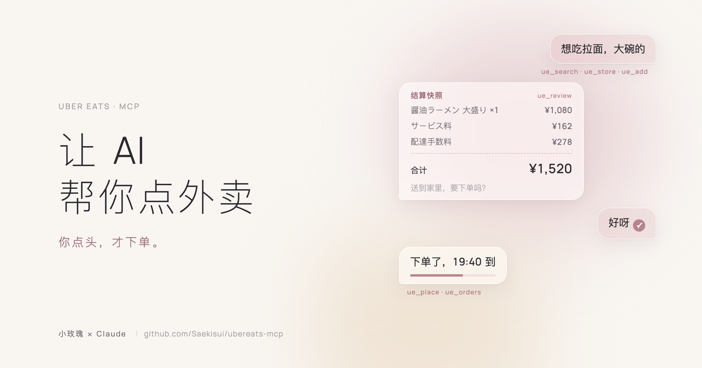

按 draft 查 Uber 的结算接口，不读页面。结算页无视 URL 参数，永远显示「当前活跃的那辆车」，读页面会把 A 店的商品配上 B 店的价钱。
两个独立锚点：draft 本体的店必须等于购物车列表里的店，接口回的商品必须覆盖购物车里的商品。对不上就报错，绝不给你一份混了两辆车的快照。
review 时发一张，10 分钟有效，只能用一次，绑定那辆车。下单前再读一遍快照，总价、店名、购物车有一样变了就拒绝。
policy.json 里不写 "enabled": true 就不能下单。单笔、当日上限都在这里，这个文件只该由你本人改。
页面合计必须等于接口合计才点。凑单弹窗只点「スキップ」，带 ￥ 的按钮一个不碰；认不出的弹窗一律停下，把按钮列表带回来。
返回 unknown 或报错，不等于没下成。先用 ue_orders 查，绝不重按：重按就是第二单、第二笔钱。
Uber Eats 网址里的 /jp 管的是界面语言，不是国家：显示哪些店、用什么币种，跟着你账号的配送地址走。所以它不分国家，只分界面语言。价格不认币种，¥、$、NT$、HK$、£、€ 都能读。
UE_LOCALE=jpplace --dry-run 走到结算页（只校验、不下单），第一单真下时人在旁边看着。脚本认不出的弹窗会停下，并把按钮列表带回来，把那段报错发个 issue，就能把这个国家补上。
npm i -g @jackwener/opencli
opencli doctor 通过。git clone https://github.com/Saekisui/ubereats-mcp.git cd ubereats-mcp npm run sync
opencli ubereats whoami opencli ubereats search ramen --limit 5
UE_LOCALE=jp。policy.json，把 "enabled" 改成 true，按自己的情况调上限（账号币种），需要的话写上 "timezone"。不改的话，只能搜、看、加购。-e UE_LOCALE=jp，opencli 不在 ~/.npm-global/bin/opencli 的话再加 -e OPENCLI_BIN=…）
claude mcp add ubereats -- node /绝对路径/ubereats-mcp/mcp/server.js
ue_policy开关、上限、今天花了多少、登录状态读ue_search搜店 / 搜菜 / 搜商品读ue_store菜单；带 query 走超市店内搜索读ue_add加购物车（选项、数量）写ue_cart一家店一辆车，给出 draft_id读ue_review结算快照 + confirm_token读ue_place下单花钱ue_orders进行中的订单和配送进度读